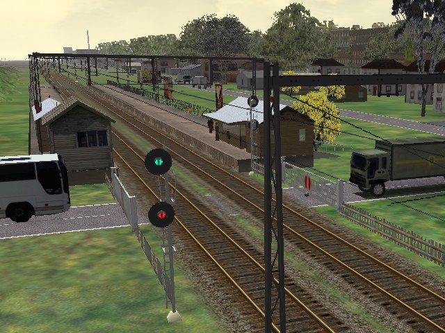

Newroads Standard
This is the standard road set. The Newroads version does not display dynamic shadows. The
shadows are there but they are under the roads. The shadow itself appears to be projected about
0.04m above the terrain. If you look closely at the fwy*/hwy* sections you will see that the shadow
covers part of the shoulder (which is angled down to 0.0m).
Newroads with Dynamic Shadows (formerly known as Newrds)
This version has the alpha channel sorting switched on: all of the "Z-Buffer/Test Only"
options are set on all roads except for the one with the "_NA" extension. The "test only"
option is what allows dynamic shadows to appear over the roads, and track beds (see image).
This results in the shadows appearing on the roads but it comes with a "price".
There are special "_NA" (=No Alphasorting) road sections that should be used to cross the tracks
themselves (they won't show any shadows but appear correctly). Even if the road is 10m above the
track it will still appear to be under the track.
For a route to be "Dynamic Shadows" compatible, grade crossings must use the special "_NA" sections
(just to cross the tracks), and bridges must have the "terrain" option checked.
Steven has also included an additional zip that has the default road sections with no shadows (from
the standard set).
What happens if you install the Newroads with Dynamic Shadows package on a route that's only
designed for Newroads Standard?
The roads appear to pass under the track, not over it (see below).

Simply run the Newroads installer and select "Standard": this returns the level crossing to normal
(see below).